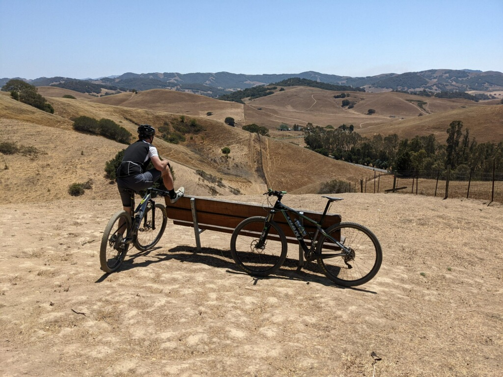
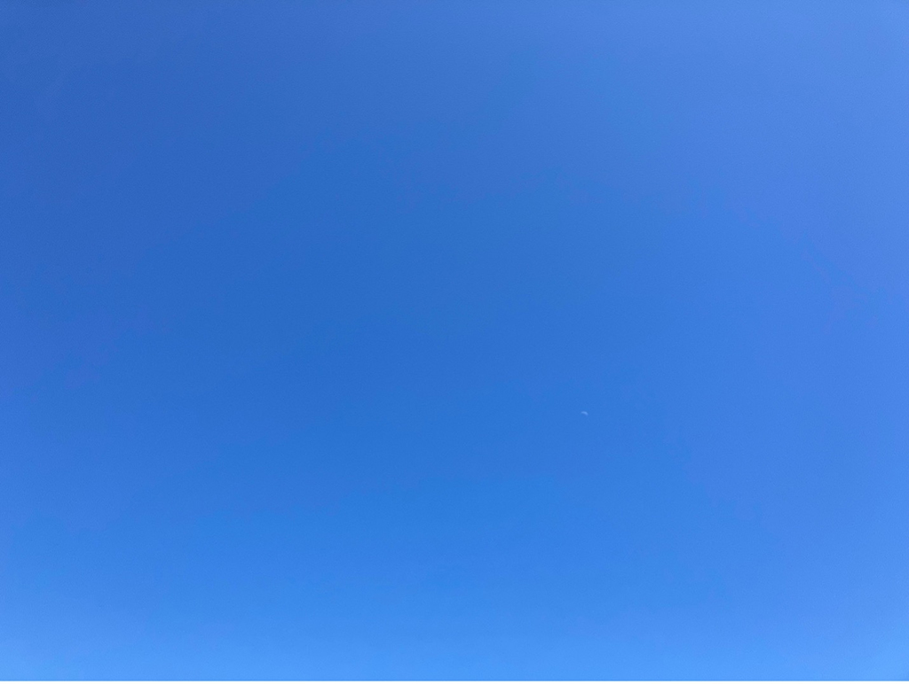

Swift is the breeze across the sky
A blue sky on a crisp autumn day is particularly appealing.
To ascertain whether or not blue sky might be part of your environmental experience in the near future, please go here ...
NOAAHere is a photo that includes an example of the actual subject of discussion.

Here is another that demonstrates key qualities of a blue sky.

| Uncooperative Condition | Observed Impact | Possible Resolution |
|---|---|---|
| High moisture content in air (relative humidity) | Haze and blue bleaching | Decamp to region experiencing a high pressure front |
| Earth has rotated away from Sun | Darkness | Decamp to region of world in the Sun facing phase of earth’s rotation |
| Atmospheric perturbations leading to severe brewing of stormclouds | Low light and dark gray skies | Decamp to regions not affected by dense moisture and turbulent pressure differentials in the jet stream |
While you’re browsing this magnificently informative page, you may decide to play some supporting background music to enhance your experience of the blue sky phenomenon. Written and performed by J. Hacha de Zola, from the album Escape from Fat Kat City.